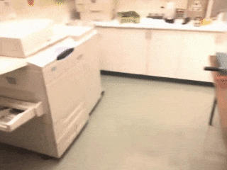
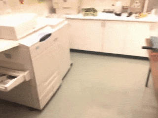
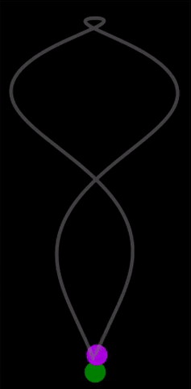
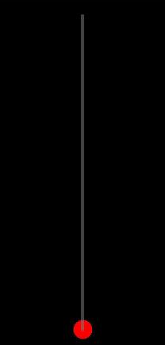
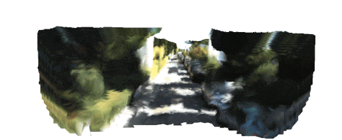

SceneRF
Self-Supervised Monocular 3D Scene Reconstruction
with Radiance Fields

Abstract
3D reconstruction from 2D image was extensively studied, training with depth supervision. To relax the dependence to costly-acquired datasets we propose SceneRF, a self-supervised monocular scene reconstruction method using only posed image sequences for training. Fueled by the recent progress in neural radiance fields (NeRF) we optimize a radiance field though with explicit depth optimization and a novel probabilistic sampling strategy to effi- ciently handle large scenes. At inference, a single input image suffices to hallucinate novel depth views which are fused together to obtain 3D scene reconstruction. Thorough experiments demonstrate that we outperform all recent baselines for novel depth views synthesis and scene reconstruction, on indoor BundleFusion and outdoor SemanticKITTI.
Demo


 

Overview of our method
Qualitative results
| Input | ||||
 |
 |
 |
 |
|
| Trajectory | Novel depths (and views) | |||
|  |


|

|

|


|
|  |


|


|


|

|
| 3D Reconstruction | ||||
 |
 |
 |
 | |
Citation
@InProceedings{cao2022scenerf,
author = {Cao, Anh-Quan and de Charette, Raoul},
title = {SceneRF: Self-Supervised Monocular 3D Scene Reconstruction with Radiance Fields},
publisher = {arxiv},
year = {2022},
}